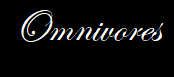
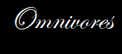
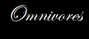

A piscivore is a carnivorous animal that eats primarily fish. The name "piscivore" is derived from the Latin word for fish, piscis. Piscivorous is equivalent to the Greek-derived word ichthyophagous which means "fish-eating".
Piscivores: eat fish; many have sharply pointed, conical teeth to pierce & hold fish before swallowing. Barracuda & tiger shark teeth are very similar. Both have flattened triangular shapes, sharp edges that may be serrated to cut flesh.
A piscivore is a carnivorous animal that eats primarily fish. ... Some creatures, including cnidarians, octopuses, squid, spiders, sharks, cetaceans, grizzly bears, jaguars, wolves, snakes, turtles, and sea gulls, may have fish as significant if not dominant portions of their diets.
